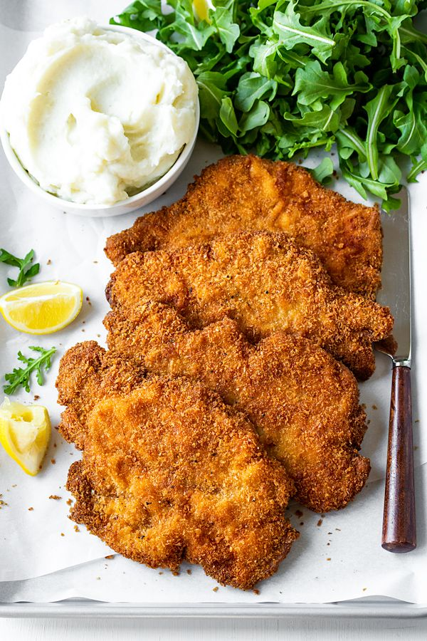
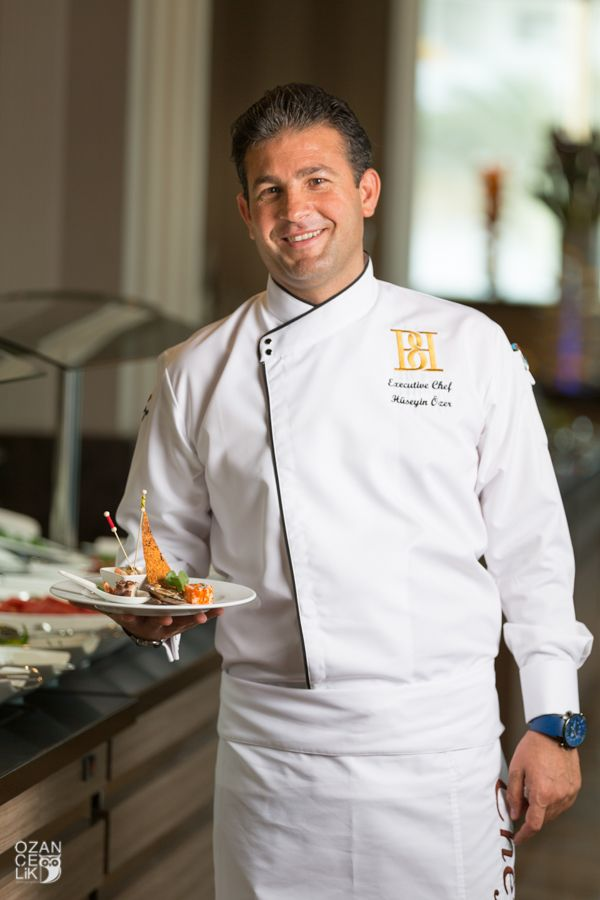

We are dedicated to giving our best to our customers so we regularly update our menu. These are our star dishes in the European region.
Our UK dishes

SCHNITZEL The schnitzel is one of our most sought-after dishes in the European region, also loved by a lot of other people.

CHEF BEN WRIGHT Special thanks to our 5-star chef in charge of the recipe for our European dishes.